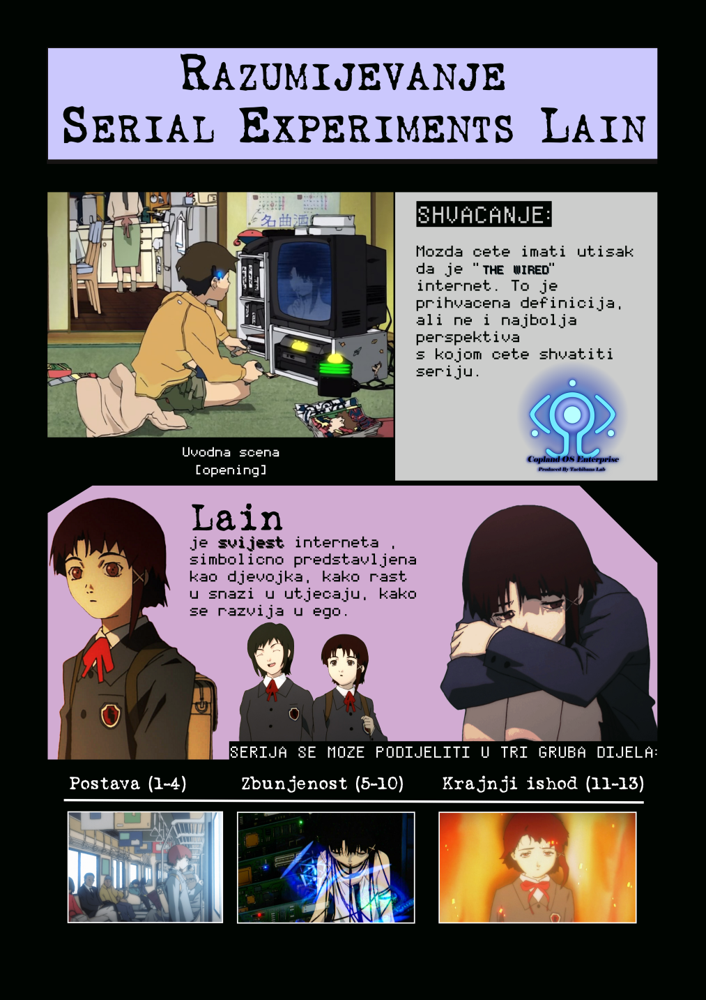

-->


SCRIBUS
TEKST
Za grafički dio projekta odabrao sam kreiranje i obradu grafičkih elemenata vektorske grafike.
Koristio sam program Inkscape, pomoću kojega sam rekreirao The Knowledge Navigator ili NAVI logo iz serije Serial Experiments Lain.
Cijeli proces je bio dugotrajan, no nije bio kompliciran. Ima puno koraka koji se ponavljaju i ogroman broj "tweaking" to jest puno
malih podešavanja, namještavanja, micanja određenih elemenata.
Sveukupno mi je trebalo oko 2 sata da napravim članak.
Dolje je prikazan gotov logo i cijeli opisani postupak zajedno sa videom gdje je prikazan cijeli postupak ubrzan (timelapse).
ČLANAK

POSTUPAK
POSTUPAK IZRADE
- Prvo kad sam otvorio Scribus u Document Layout sam odabrao double sided koji na kraju nisam ni korisitio
- Na Menu gore sam odabrao Page i Insert... te se pojavio prozor u kojemu sam odabrao Insert 2 Page(s) at End i kliknuo Ok
- pa sam izbrisao stranice desnim klikom na stranicu i Delete Page
- Na alatnoj traci sam kliknuo Insert text frame i mišem sam ubacivao text box-ove na željeno mjesto na stranici
- Na Menu sam odabrao View i označio sam Show Grid da mogu bolje pravnavati elemente i objekte na stranici
- Da oblikujem tekst kliknuo bi desni klik na text objekt i odabrao Edit Text za koji sam shvatio da je nepraktičan
- Morao sam kliknuti desni na text objekt i odabrati Properties da se pojavi prozor u kojem odaberem Text tab gdje sam mogao namještavati Font Style, Font size i ostale efekte i poravnanja teksta
- Također u Properties se nalazio X, Y, Z tab gdje sam mogao namještavati razinu to jest layer na kojem se objekt nalazi
- Takožer sam za tekst ubacio Custom Font u Scribus Settings
- Na alatnoj traci sam odabrao Insert image frame gdje bi mišeo ubacio na stranici Image box gdje mogu ubaciti slike
- Slike sam ubacivao na način da ih Drag Drop-am u Image Box
- Za uređivanje slike kliknuo sam desni na image objekt i odabrao Properties da se pojavi prozor u kojem bi odabrao Image tab gdje sam mogao namještavati svojstva slike
- Za točno skaliranje bi klikno Scale To Frame Size i označio Proportional
- Za određene slike sam i odabra Image Effects gdje bi uređivao slike
- Na alatnoj traci sam odabrao Insert line gdje bi mišeo ubacio na stranicu Line
- Za uređivanje linije kliknuo sam desni na line objekt i odabrao Properties da se pojavi prozor u kojem bi odabrao Line tab gdje sam mogao namještavati svojstva linije kao što su Type of Line i Line Width
- Sve sam ove korake ponavljao puno puta
- Pri završetku projekta sam primjetio da crna boja koja je po Default-u nije zapravo Crna pa sam trebao za sve Text objekte, Image objekte i Line objekte namjestiti da im crna boja bude Rich Black
- Kad je stranica bila gotova išao sam na File -> Export -> Save as Image te se pojavio prozor gdje sam povećao Resolution i odabrao ime datoteke i kliknuo Ok